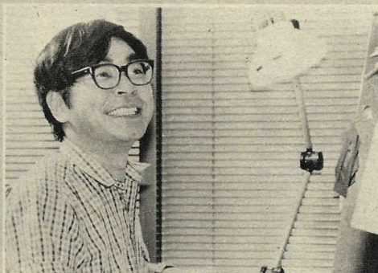

When "Magic Boy" was made, Hayao Miyazaki was
seventeen
years old.

He
did
work for Toei Animation. But he didn't start until 1963,
five years later
.
If anything, the movie influenced
him
.
Meanwhile...